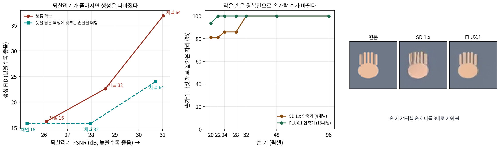

압축기의 두 목표: 되살리기와 뜻 담기
압축기가 생성의 천장이라면, 천장을 올리는 길은 분명해 보인다. 채널을 늘리면 된다. 8픽셀 글자 줄은 Stable Diffusion 1.x 압축기(4채널)를 거치면 19.9 dB 로 돌아오고 FLUX.1 압축기(16채널)를 거치면 27.2 dB 로 돌아왔다. 손가락도 같다. 살색 손바닥에 손가락 다섯 개를 그린 도식 손을 크기만 바꿔 압축기에 한 번 넣었다 빼 보았다. 놓는 자리를 8 × 8칸 격자에 대해 64가지로 바꾸고, 손가락 가운데 높이에서 살색 덩어리를 셌다. 손 키가 20 ~ 28픽셀(손가락 폭 1.8 ~ 2.5픽셀)이면 SD 1.x 압축기는 64자리 가운데 9 ~ 12자리에서 손가락을 넷이나 여섯으로 돌려보냈다. FLUX.1 압축기는 손 키 20픽셀에서 4자리만 틀렸고, 키 32픽셀부터는 두 압축기 모두 64자리를 다 맞혔다. 그림 속 사람이 작아 손이 몇십 픽셀이면, 디퓨전이 잠재를 아무리 잘 만들어도 디코더를 지나는 순간 손가락 수가 바뀔 수 있다.
그런데 채널을 늘린 압축기 쪽이 디퓨전에게도 좋을까? 채널을 넷에서 열여섯으로 늘리면 작은 디퓨전 모델은 오히려 나빠졌다는 Stable Diffusion 3 논문의 관찰이 있었다. 되살리기를 잘하는 잠재와 디퓨전이 배우기 좋은 잠재는 같은 것일까?
역사: 되살리기와 생성의 딜레마
2025년 1월 중국 화중과기대의 야오(Jingfeng Yao)·왕(Xinggang Wang)과 독립 연구자 양(Bin Yang)은 이 물음을 숫자로 펼쳤다. 가로세로를 16배로 줄이는 압축기를 채널 16, 32, 64로 학습하고, 그 잠재 위에서 같은 크기의 디퓨전 트랜스포머(LightningDiT-B)를 같은 횟수(ImageNet 160번 돌기)만큼 학습했다. 되살리기 PSNR 은 26.10, 28.59, 31.03 dB 로 올랐는데, 생성 FID(ImageNet 256 × 256, 낮을수록 좋음)는 16.24, 22.62, 36.83으로 나빠졌다. 논문은 이것을 「최적화 딜레마」라 부르고, 까닭을 「제약 없는 높은 차원의 잠재 공간은 배우기 어렵다」는 데서 찾았다. 압축기는 되살리기 손실만 받으므로, 남는 채널에 무엇을 어떤 배치로 담을지는 아무도 정해 주지 않는다.
그들의 처방은 압축기를 학습할 때 잠재를 미리 학습된 그림 인식 모델(DINOv2)의 특징과 닮게 하는 손실을 더하는 것이었다(VA-VAE). 채널 64에서 PSNR 은 31.03에서 30.71 dB 로 조금 내려갔지만 생성 FID 는 36.83에서 24.00으로 좋아졌다. 2025년 10월 뉴욕대의 정(Boyang Zheng), 마(Nanye Ma), 퉁(Shengbang Tong), 셰(Saining Xie)는 한 걸음 더 갔다. 압축기의 인코더를 아예 미리 학습된 표현 인코더(그림의 뜻을 잘 담도록 학습한 DINOv2·SigLIP2·MAE 같은 인코더)로 바꿔 얼려 두고, 그 위에 디코더만 학습시켰다. 그들은 이것을 표현 오토인코더(Representation Autoencoder, RAE)라 불렀다. 「표현 인코더는 뜻에 치우쳐 세부를 잃는다」는 통념과 달리, DINOv2-B 를 쓴 표현 오토인코더는 되살린 그림의 분포 거리(rFID)가 0.49로 SD 압축기의 0.62보다 좋았다. 잠재가 그림의 뜻을 얼마나 담았는지 재는 선형 분류 정확도는 84.5% 대 약 8%였다.

뜻을 담는 잠재의 값
두 연구가 공통으로 말하는 것은, 압축기의 목표가 하나가 아니라는 점이다. 디코더 쪽에서는 잠재가 원래 그림을 칸마다 정확히 되살릴 수 있어야 한다. 디퓨전 쪽에서는 잠재가 배우기 쉬운 모양이어야 하고, 그 모양은 「같은 뜻의 그림은 가까이」처럼 뜻을 따라 정리된 공간일 때 좋았다. 되살리기만 보고 학습한 압축기는 첫째를 잘하고 둘째를 우연에 맡긴다. 이렇게 압축기가 되살리기를 좋게 하면 생성이 나빠지고, 생성을 좋게 하면 되살리기가 조금 깎이는 맞바꿈을 되살리기와 생성의 딜레마 (압축기의 되살리기 실력과 그 잠재 위 생성 실력이 맞서는 것 / reconstruction–generation dilemma)라 한다.
표현 오토인코더 쪽에도 맞바꿈이 남아 있다. 디퓨전이 만든 잠재는 조금씩 어긋나 있어서, 디코더를 학습할 때 잠재에 잡음을 섞어 넣었더니 생성 FID 는 4.81에서 4.28로 좋아지고 rFID 는 0.49에서 0.57로 나빠졌다(논문 표 5). 또 DINOv2-B 의 잠재는 토큰 하나에 수 768개로 SD 압축기보다 훨씬 두꺼워서, 디퓨전 트랜스포머의 폭이 그보다 좁으면 그림 한 장도 외우지 못했다고 논문은 보고한다. 그림을 큰 조각으로 잘라 트랜스포머에 넣을 때 다시 만나는 그 벽이다.
다른 길도 있다. 디퓨전 신경망 안의 특징을 바깥 표현 인코더의 특징과 닮게 하는 표현 정렬 손실을 쓰면, 압축기와 디퓨전 모델을 처음부터 함께 학습할 수 있다는 보고가 2025년에 나왔다(REPA-E). 디퓨전 손실만으로 함께 학습하면 오히려 나빠졌다는 것도 같은 논문의 관찰이다. 여기 숫자는 모두 분류 라벨을 조건으로 한 ImageNet 256 × 256 의 것이다. 이런 압축기가 작은 글자나 작은 손가락의 되살리기까지 고치는지는 이 논문들이 따로 재지 않았다.
문제 13. 녹취록과 요점 노트
회의를 기록하는 방법이 둘이다. (ㄱ) 모든 말을 「음」「어」까지 받아 적은 녹취록 (ㄴ) 결정 사항과 근거만 적은 요점 노트. (가) 회의를 그대로 다시 들려줘야 할 때는 어느 쪽이 나은가? (나) 회의록 수백 개를 보고 「이 팀다운 새 회의록」을 지어내는 연습을 한다면, 어느 기록으로 연습하는 쪽이 빨리 늘까? (다) 둘의 장점을 함께 가지려면 녹취록을 어떻게 정리해 두면 좋을까?

(가)는 녹취록이죠. (나)도 녹취록이요. 정보가 더 많으니까 더 많이 배우잖아요.

녹취록을 보고 새 회의록을 지어내려면 무엇까지 지어내야 하죠?

아, 「음」「어」가 어디서 몇 번 나오는지까지요. 그건 회의마다 제멋대로라 배울 게 없는데, 지어낼 때는 그것도 그럴듯하게 맞춰야 하네요. 요점 노트는 결정과 근거의 짜임만 익히면 돼요.

(다)는 녹취록을 버리지 말고 요점별로 묶어 두는 거야. 같은 안건의 말은 한데 모아 두면, 지어내는 사람은 요점의 짜임을 먼저 보고 받아 적는 사람은 세부를 다 찾을 수 있어.

그래요. 압축기의 잠재도 「다 담는 것」과 「배우기 좋게 정리된 것」이 따로 놀 수 있어요. 뜻을 따라 정리하는 손실을 더하는 것이 서연 학생이 말한 「요점별로 묶기」예요.

시험 공부할 때 강의 녹음을 통째로 다시 듣는 것보다, 단원별로 정리한 노트가 문제를 새로 풀 때는 더 쓸모 있던 거랑 같네요.
문제 14. PSNR 0.32 dB 와 FID 12.83
야오·양·왕의 표에서 채널 64 압축기는 보통 학습이면 PSNR 31.03 dB·생성 FID 36.83, 뜻을 담은 특징에 맞추는 손실을 더하면 30.71 dB·24.00이었다. 채널 16은 26.10 dB·16.24였다. (가) 손실을 더해 깎인 PSNR 0.32 dB 는 칸당 평균 제곱 오차로 몇 배인가? (나) 채널 16에서 64로 갈 때 PSNR 이 오른 만큼은 제곱 오차로 몇 분의 1인가? (다) 「채널 64에 손실을 더한 것」과 「채널 16」 가운데 무엇을 고르겠는가? 무엇을 더 알아야 하는가?

(가)는 100.032 = 1.08배. 오차가 8% 늘었을 뿐이야.
(나)는 31.03 − 26.10 = 4.93 dB 라서 100.493 = 3.11, 오차가 3분의 1이 됐어요. (다)는 채널 64에 손실을 더한 쪽이요. 되살리기가 세 배 가까이 좋은데 생성 FID 는 24.00 대 16.24라… 어, 생성은 채널 16이 더 좋네요.
그 FID 들은 같은 크기의 디퓨전 모델을 같은 걸음만큼 학습한 숫자예요. 모델을 키우거나 오래 학습하면 어떨까요?

채널을 늘린 잠재는 배우기 어려운 대신 천장이 높으니까, 모델과 학습이 넉넉하면 따라잡을 수도 있어요. Stable Diffusion 3 논문이 16채널에서 본 것처럼요. 그러면 고를 기준은 디퓨전에 쓸 계산 예산이네요.
그래요. 그리고 작은 글자나 작은 손이 중요한 그림이라면, FID 가 아니라 바로 그 세부의 되살리기를 따로 재어 봐야 해요. FID 는 그림 전체의 분포만 보니까요.
최적화에서 목적 함수가 둘이면 하나를 좋게 할 때 다른 하나가 나빠지는 경계, 파레토 경계를 그리던 거랑 같네요. 손실을 더한 건 경계 자체를 바깥으로 민 거고요.
문제 15. 손가락이 여섯인 그림은 누구 탓인가
잠재 디퓨전 모델로 뽑은 그림에서 멀리 선 사람의 손가락이 여섯으로 나왔다. (가) 이것이 압축기 탓인지 잡음 예측 신경망 탓인지 가르려면 어떤 실험을 하면 되는가? (나) 손 키 24픽셀 도식 손에서 SD 1.x 압축기는 64자리 가운데 9자리를 여섯 손가락으로 돌려보냈다. 이 숫자는 (가)의 어느 쪽 증거인가? (다) 그림 앞쪽에 크게 나온 손(키 300픽셀)에서 손가락이 여섯이라면?
(가)는 압축기를 더 좋은 걸로 바꿔서 다시 뽑아 보면 돼요. 고쳐지면 압축기 탓이고요.
압축기를 바꾸면 디퓨전 모델은 그대로 쓸 수 있나요?

아, 잠재 모양이 달라지니까 디퓨전 모델도 다시 학습해야 하네요. 그럼 둘이 같이 바뀌어서 누구 탓인지 못 가려요.
디퓨전을 빼고 압축기만 시험하면 돼. 손가락이 다섯인 진짜 사진을 같은 크기로 압축기에 넣었다 빼 보는 거야. 왕복만으로 손가락 수가 바뀌면 압축기가 천장이고, 다섯으로 잘 돌아오면 압축기는 그 크기를 감당하니까 여섯을 만든 건 잡음 예측 신경망이야.
그래요. (나)의 9자리는 「그 크기에서는 디퓨전이 완벽해도 손가락이 바뀔 수 있다」는 압축기 쪽 증거예요. (다)는요?
키 32픽셀부터 두 압축기 모두 64자리를 다 맞혔으니까, 300픽셀 손은 왕복으로 손가락이 바뀌지 않을 거예요. 그럼 그건 잡음 예측 신경망이 손의 짜임을 잘못 그린 거고요.
출력물이 흐리면 프린터 탓인지 원본 파일 탓인지, 원본을 화면에서 확대해 보고 가르는 거랑 같네요.